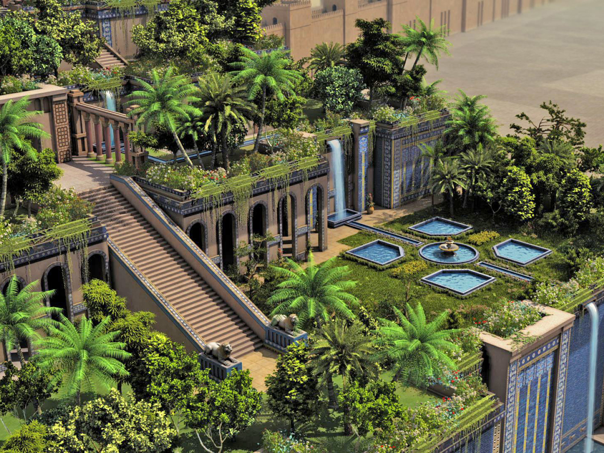

Connaissez-vous les merveilles du monde ?
Source wikipédia : Les jardins suspendus de Babylone sont un édifice antique, considéré comme une des Sept Merveilles du monde antique. Ils apparaissent dans les écrits de plusieurs auteurs grecs et romains antiques (Diodore de Sicile, Strabon, Philon d'Alexandrie, etc.), qui s'inspirent tous de sources plus anciennes disparues, dont le prêtre babylonien Bérose. C'est à ce dernier que l'on doit l'histoire de la construction de ces jardins par Nabuchodonosor II afin de rappeler à son épouse, Amytis de Médie, les montagnes boisées de son pays natal. Lors de la redécouverte et des fouilles de Babylone (dans le sud de l'Irak actuel) au début du XXe siècle, l'emplacement des jardins suspendus a été cherché. Mais alors que les autres constructions mythiques de la ville (Tour de Babel/ziggurat, murailles, palais royaux) ont été retrouvées par l'archéologie et la traduction des inscriptions anciennes, cela n'a pas été le cas des jardins. Les chercheurs contemporains ont donc émis diverses propositions : certains ont cherché à localiser les emplacements possibles des jardins suspendus dans la ville, tandis que d'autres ont remis en cause leur existence, les situant dans une autre ville (Ninive) ou les reléguant au rang d'invention développée par des auteurs antiques à partir des jardins royaux babyloniens.
